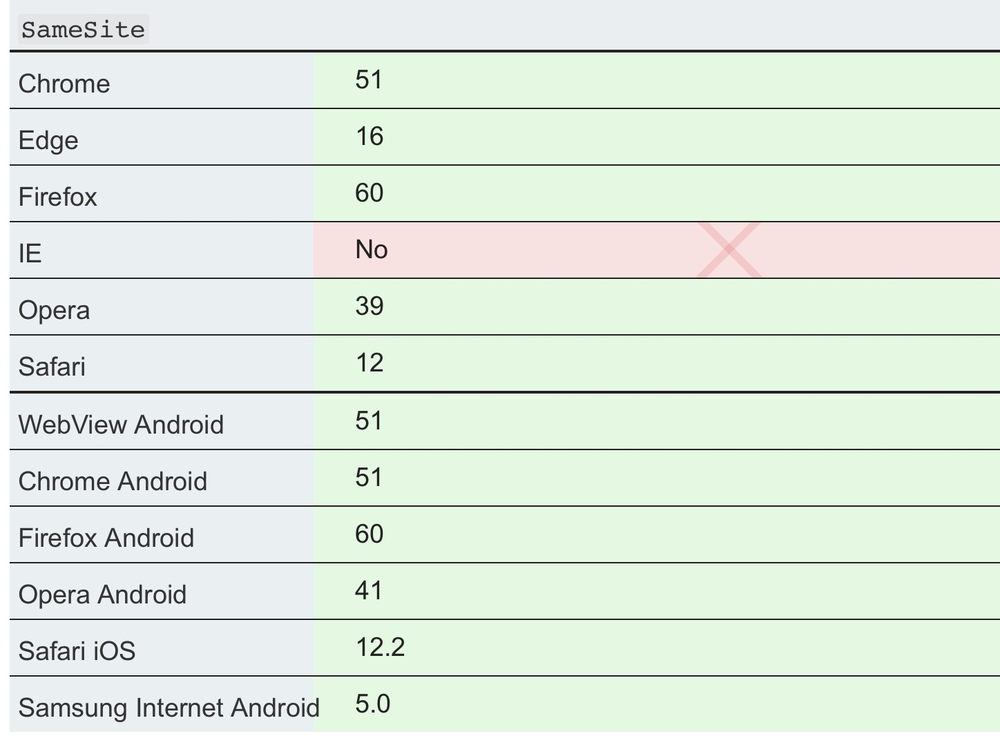

跨站点请求伪造(CSRF)
CSRF 全称 Cross Site Request Forgery [fɔrdʒəri]。
1. CSRF简介
CSRF 攻击，通常指攻击者在用户已经经授权登陆的情况下，通过构造请求执行用户不想执行的状态变更操作的请求，来完成攻击。
攻击者如果攻击成功，可以完成修改用户数据，引发转账等操作。
2. 攻击原理

前提：
用户已经在攻击的目标网站授权登陆。
Set-Cookie: cookie=value; 用户登录后，cookie 就已经授权，其后续请求在没有设置 cookie 的 samesite 标志位时都会带上所有cookie。浏览器甚至提供了 Session Restore 功能， 可以让 Session cookie 一直有效。
攻击方式
- 外链：通过社交工具，email、聊天软件、短信等将连接发送给受害者，通过诱导用户点击完成攻击。
- 网站内部请求：通过在网站的输入比如 结合存储型xss 攻击，将伪造的请求通过展示的图片，连接等展示在线上。这种方式，因为直接在目标网站内发起请求，几乎绕过所有请求限制。
举例
2007 年 Gmail CSRF 漏洞。 步骤：
- 首先用户登录 Gmail 使得 Session Cookie 生效。
- 然后，诱导用户访问一个第三方连接。
- 连接打开一个空白页面，里面是一个隐藏的 iframe。内部生成了一个自动提交的form表单。
- 攻击的接口使用的是 Session Cookie，所以在跨域打开 iframe 时仍然有效。这个接口创建了一条规则，将所有的带附件的邮件都转发给攻击者。
另外一个修改用户密码的 CSRF 漏洞介绍 https://securiteam.com/securitynews/5ZP010UQKK/
3. CSRF 攻击测试
4. CSRF 防御
验证码
最常见的方式，验证码每次都是随机的，切需要进行图片识别。需要用户进行交互，就不能通过一次点击来完成攻击了。
验证码的缺陷很明显，体验比较糟糕。所以，一般只在关键的步骤中添加。
Referer Check
通过页面请求的 HTTP_REFERER 头，来做一些安全限制操作。比如，只有从首页忘记密码到重置密码的检查。发帖必须从主页跳转。
Referer Check 缺点在于这个 referer 本身并不可靠，用户可以通过浏览器配置或者Referrer-Policy 关闭 referer 的发送。
Referrer-Policy 可以在页面模板中设置：
Referrer-Policy: no-referrer
Referrer-Policy: no-referrer-when-downgrade
Referrer-Policy: origin
Referrer-Policy: origin-when-cross-origin Referrer-Policy: same-origin
Referrer-Policy: strict-origin
Referrer-Policy: strict-origin-when-cross-origin
Referrer-Policy: unsafe-url
使用 Token
OWSAP 在 Github 仓库 里也详细介绍了 Token 的使用。
SameSite cookies
在种植 Cookie 时设置 SameSite cookies 标志位。
Set-Cookie: key=value; SameSite=Strict
这个标志位是一个新功能，新对浏览器要求版本较高。值设置为 Strict 时，浏览器将不允许跨域携带改 cookie。https://www.owasp.org/index.php/SameSite
浏览器的如果不支持这个标志位或者这个标志位未设置，那么所有请求都会带上，包括跨域请求。参见：SameSite cookies

问题
验证 csrf 第三方 cookie 在 iframe 是否可以携带?
已验证，Chrome 75.0.3770.100 和 Safari 12.1.1 都默认在iframe, img, a 标签携带了第三方 cookie。
根据这里 描述：
SameSite cookies: The default behavior if the flag is not set, or not supported by the browser, is to include the cookies in any request, including cross-origin requests.